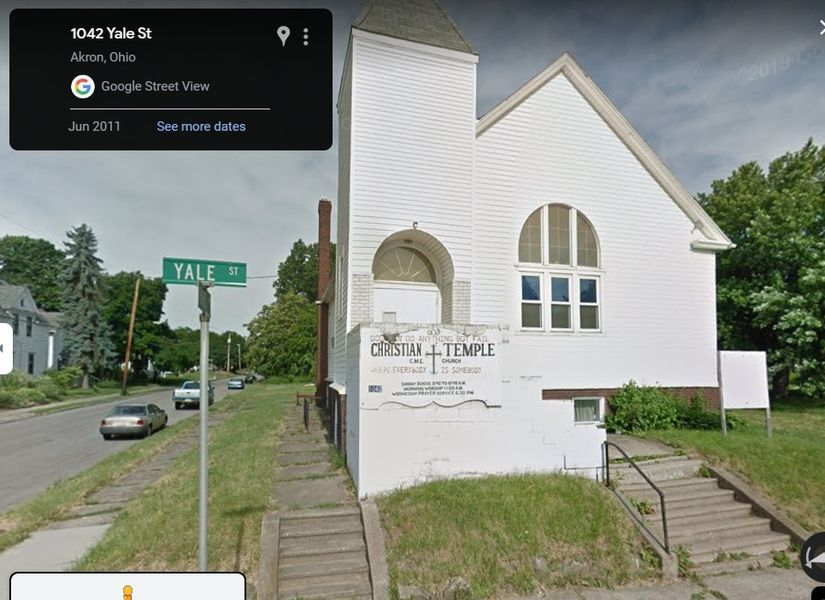

Timeline photos
We've been starting to clean out this church.
It has sat completely empty for years. Random people come and go. But nothing really significant was happening there.
Within a couple weeks of us working in the church we now have no less than 5 people living in this church.
How could it go from having no one in the church to suddenly having 5 people living in it?
It's not because we started cleaning out the trash. These 5 people are actually bringing in MORE trash.
It's simple: ACCEPTANCE.
We don't judge these people. We live by a very basic, yet foundational philosophy: We accept you just the way you are.
If society actually wanted to engage with people living on the fringe, they should try starting with accepting them for being fine just the way they are. And then they all would find that everyone has hopes and dreams and aspirations. You could offer your "wrap around services" to these people that already feel loved and accepted.
It's a radical and extreme philosophy. We always seem to go the "lock 'em up" approach.
ALL THAT SAID: We are not letting these people live in this church. That's not what this is about. That's not what this community needs.
We gave these people a 2 week notice. And then we'll be securing the building.